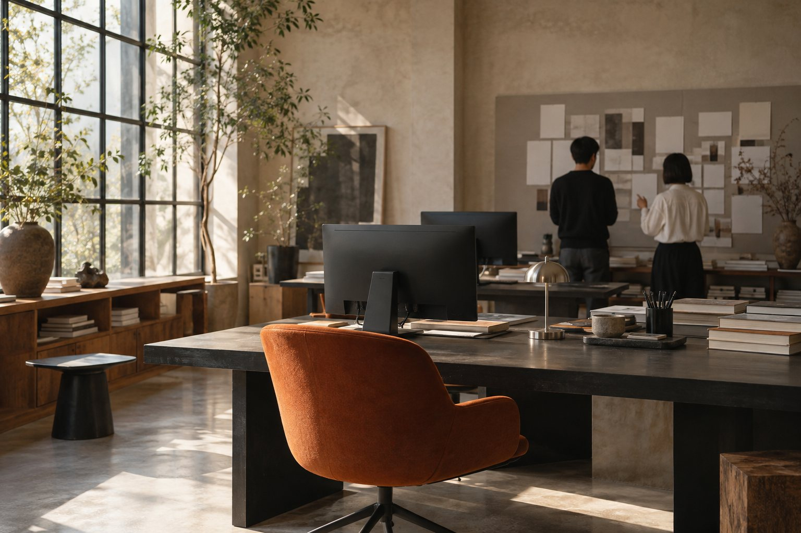

CAREERS
好奇心を、
仕事のまんなかに。

一緒に考える。
違いを持ち寄る。
企画、デザイン、運用。それぞれの視点をつなぐ働き方を紹介する採用ページの構成例です。
本デモは求人募集ではありません。実際の職種・条件・選考方法は未設定で、応募受付も行っていません。
会社の考え方を見る ↗CAREERS

企画、デザイン、運用。それぞれの視点をつなぐ働き方を紹介する採用ページの構成例です。
本デモは求人募集ではありません。実際の職種・条件・選考方法は未設定で、応募受付も行っていません。
会社の考え方を見る ↗